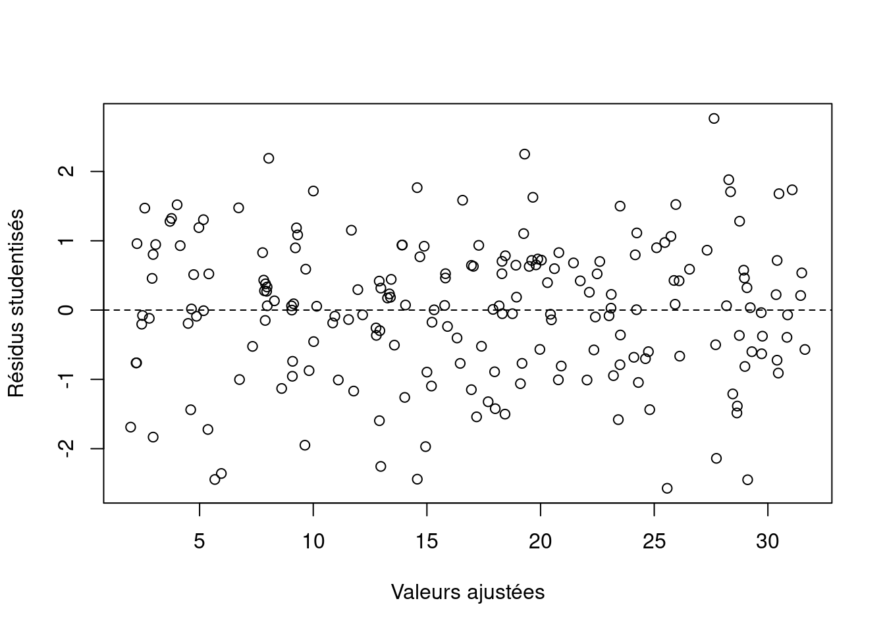

set.seed(314)
n<-200
X<-runif(n,0,10)
sigma2<-1.6
epsilon<-rnorm(n,0,sigma2)
Y<- 2 + 3*X + epsilon
sim1<-data.frame(X,Y)
plot(sim1$X,sim1$Y)
La régression linéaire est une méthode d’apprentissage supervisé qui vise à évaluer, lorsqu’il existe, la relation linéaire entre une variable d’intérêt et des variables explicatives.
Pour un ensemble \((y_i,x_i)\) de données constitué de n échantillons iid (indépendant et identiquement distribué), le modèle de regression linéaire s’écrit comme suit :
\[\begin{align} y_i&= \beta_0 + \beta_1 x_{i1} + \dots + \beta_p x_{ip} + \xi_i\\ &= X_i \beta + \xi_i \end{align}\]où \(y_i\) est la variable cible, \(x_{i1}, \dots, x_{ip}\) sont les variables explicatives et \(\xi_i\) est l’erreur, l’information que les autres variables explicatives ne donnent pas.
L’hypothèse fondamentale de la régression linéaire est l’existence d’une relation linéaire entre la variable cible et les variables explicatives. Pour s’assurer de la pertinence de cette hypothèse avant de procéder à la régression linéaire (à l’aide de visualisation ou de tests- spearman, pearson, etc.)
L’hypothèse de rang plein est la seconde plus grande hypothèse, elle stipule que les variables explicatives ne soient pas corrélées entre elles. Cette condition est nécessaire pour garantir l’unicité des estimations des paramètres du modèle et ainsi l’identifiabilité du modèle étudié
Par ailleurs pour que les estimations des paramètres du modèle linéaire soient fiables, les erreurs du modèle, représentées par \(\xi_i\), doivent répondre à plusieurs critères :
Il est courant d’observer une hypothèse supplémentaire sur la loi des erreurs. En effet, les erreurs sont souvent supposées suivre une loi normale, c’est à dire que \(\xi_i \sim N(0, \sigma^2)\). Celà nous permet de faire des inférences sur les paramètres du modèle et de construire des intervalles de confiance.
Toutes les hypothèses étant respectées, et sous reserve qu’il n’y a pas de multicolinéarité entre les variables explicatives du modèles i.e. \(X^T X\) est inversible(l’hypothèse de rang plein est respectée), l’estimateur \(\hat \beta\) de \(\beta\) obtenus par moindre carré ordinaire est donné par la formule suivante :
\[ \hat \beta = (X^T X)^{-1} X^T y \]
De ce fait, nous pouvons calculer la variance de cet estimateur : \[ VAR(\hat \beta) = \sigma^2 (X^T X)^{-1} \]
D’après le théorème de Gauss-Markov, l’estimateur \(\hat \beta\) est le meilleur estimateur linéaire non biaisé des paramètres du modèle. En effet, il est l’estimateur avec la plus petite variance, parmi les estimateurs linéaires sans biais qui existent. Cet estimateur est ainsi appelé BLUE (Best Linear Unbiased Estimator).
Lorsque les erreurs sont supposées suivre une loi normale, l’estimateur \(\hat \beta\) est également l’estimateur du maximum de vraisemblance des paramètres du modèle et suit une loi normale \(\hat \beta \sim N(\beta, \sigma^2 (X^T X)^{-1})\).
L’estimateur de la variance des erreurs \(\sigma^2\) est donné par :
\[ \hat \sigma^2 = \frac{1}{n-p} \sum_{i=1}^{n} \hat \xi_i^2 = \frac{SCR}{n-p} \] SCR = somme des carrés des résidus.
Dans l’optique de mesurer la qualité du modèle, plusieurs métriques sont utilisées : le R², le R² ajusté, l’erreur quadratique moyenne (MSE), des critères d’informations (AIC, BIC) etc.
Le coefficient de détermination \(R^2\) est une mesure de la proportion de la variance de la variable cible qui est expliquée par le modèle. Il est défini comme suit :
\[ R^2 = 1 - \frac{SCR}{SCT} \] avec SCT qui est la somme des carrés totaux (\(SCT = \sum_{i=1}^{n} (y_i - \bar y)^2\)) et SCR qui est la somme des carrés des résidus.
Néanmoins, le \(R^2\) n’est pas une mesure parfaite de la qualité du modèle. En effet, il augmente avec le nombre de variables explicatives, même si ces variables n’ont pas de lien avec la variable cible. Pour pallier à ce problème, le \(R^2\) ajusté est utilisé. Il est défini comme suit :
\[ R^2_a = 1 - \frac{SCR/(n-p)}{SCT/(n-1)} \]
Les critères AIC et BIC sont des critères d’information qui servent à mesurer l’attache du modèle aux données que nous avons ajustés avec une pénalité lié soit aux nombres de variables inclus dans le modèles et/ou la taille de l’échantillon étudié. De fait, plus l’AIC ou le BIC est faible, meilleur est le modèle, car cela signifie qu’il a le modèle choisie a une probabilité plus élevée d’être correct et une complexité plus faible.
Mathématiquement,
\[ \text{AIC} = - 2 \log (l(\hat{\theta})) - 2\times p, \quad p=|\hat \theta| \]
\[ \text{BIC} = - 2 \log (l(\hat{\theta})) - \log (n) \times p \]
Maintenant que ces équations sont visibles, nous constatons que le BIC est un critère plus parcimonieux que le critère AIC en raison de la pénalisation qui est plus élevé lorsque \(\log(n) \geq 2\), i.e il y a environ 8 observations dans l’échantillon sélectionné.
Pour évaluer l’intérêt de la regréssion linéaire, nous allons simuler un échantillon de taille n=200, où la variable cible Y est une fonction linéaire de la variable explicative X. La vraie relation est donnée par \(Y = 2 + 3X + \epsilon\), où \(\epsilon \sim N(0, 1.6)\). De fait le modèle linéaire est adéquat.
set.seed(314)
n<-200
X<-runif(n,0,10)
sigma2<-1.6
epsilon<-rnorm(n,0,sigma2)
Y<- 2 + 3*X + epsilon
sim1<-data.frame(X,Y)
plot(sim1$X,sim1$Y)
En ajustant un modèle linéaire simple à nos données, nous obtenons une estimation des paramètres \(\hat \beta_0 = 1.92\) et \(\hat \beta_1 = 2.98\). Les erreurs du modèle suivent une loi normale avec une variance \(\hat \sigma^2 = 1.45\).
sim1_lm<-lm(Y~X,data=sim1)
summary(sim1_lm)
Call:
lm(formula = Y ~ X, data = sim1)
Residuals:
Min 1Q Median 3Q Max
-3.6505 -0.9901 0.0830 0.9899 3.9100
Coefficients:
Estimate Std. Error t value Pr(>|t|)
(Intercept) 1.92097 0.20774 9.247 <2e-16 ***
X 2.97748 0.03582 83.117 <2e-16 ***
---
Signif. codes: 0 '***' 0.001 '**' 0.01 '*' 0.05 '.' 0.1 ' ' 1
Residual standard error: 1.447 on 198 degrees of freedom
Multiple R-squared: 0.9721, Adjusted R-squared: 0.972
F-statistic: 6908 on 1 and 198 DF, p-value: < 2.2e-16Pour évaluer la qualité du modèle, nous allons tracer les résidus studentisés en fonction des valeurs ajustées. Les résidus studentisés sont les résidus divisés par l’écart-type des erreurs.
plot(sim1_lm$fitted.values,rstudent(sim1_lm),xlab="Valeurs ajustées", ylab="Résidus studentisés")
abline(h=0,lty=2)
Le plot ci dessus nous montre que lorsque les réponses prédites par le modèle (fitted values) augmentent, les résidus restent globalement uniformément distribués de part et d’autre de 0. Cela montre, qu’en moyenne, la droite de régression, est bien adaptée aux données, et donc que l’hypothèse de linéarité est acceptable.
Si l’on observait une forme de trompette, celà reviendrait à soulever une question sur l’hétéroscédascité des résidus, tandis qu’une forme de banane revèle plutôt une relation de non-linéarité.
Lorsque le nuage de point n’a pas de structure particulière, a priori l’hypothèse d’homoscédascticité n’est pas remise en question, comme cela semble être le cas ici. Attention : ces principes peuvent parfois être mis en défaut et il vaut toujours mieux réaliser plusieurs contrôles différents.
Pour vérifier l’hypothèse d’homoscédasticité, nouspouvons également utiliser le test de Breusch-Pagan. Ce test est basé sur la régression des carrés des résidus sur les variables explicatives. Si le test est significatif, l’hypothèse d’homoscédasticité est rejetée.
#library(leaps)
library(car)Le chargement a nécessité le package : carDatancvTest(sim1_lm)Non-constant Variance Score Test
Variance formula: ~ fitted.values
Chisquare = 0.0003134709, Df = 1, p = 0.98587Pour tester l’hypothèse de non corrélation des résidus, nous pouvons utiliser le test de Durbin-Watson. Ce test est basé sur l’autocorrélation des résidus. Si le test est significatif, l’hypothèse de non corrélation des résidus est rejetée.
durbinWatsonTest(sim1_lm) lag Autocorrelation D-W Statistic p-value
1 0.02199557 1.939509 0.63
Alternative hypothesis: rho != 0En ce qui concerne l’hypothèse de normalité des résidus, nous pouvons utiliser le test de Shapiro-Wilk. Ce test est basé sur la comparaison des résidus avec une loi normale. Si le test est significatif, l’hypothèse de normalité des résidus est rejetée.
shapiro.test(sim1_lm$residuals)
Shapiro-Wilk normality test
data: sim1_lm$residuals
W = 0.99131, p-value = 0.2749La p-valeur du test de Shapiro-Wilk est de 0.27, ce qui signifie que l’hypothèse de normalité des résidus n’est pas rejetée.
Pour évaluer la qualité du modèle, nous allons calculer le coefficient de détermination \(R^2\) et le \(R^2\) ajusté.
(R2<-summary(sim1_lm)$r.squared)[1] 0.9721382(R2_adj<-summary(sim1_lm)$adj.r.squared)[1] 0.9719975(AIC(sim1_lm))[1] 719.3729(BIC(sim1_lm))[1] 729.2678Nous obtenons un \(R^2\) et un \(R^2\) ajusté de 0.97. Cela signifie que 97% de la variance de la variable cible est expliquée par le modèle. Notre modèle de régression linéaire est bien ajusté à nos données.